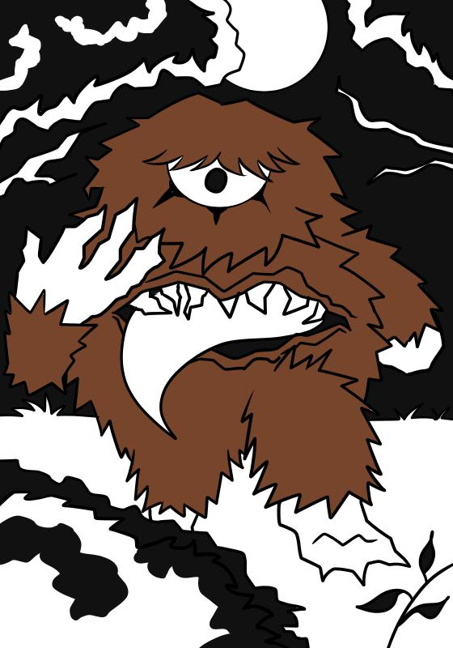

Mapinguari
O Mapinguari, ou Mapinguary, é um personagem folclórico amazônico, descrito como um ser gigante, peludo, de braços longos e garras afiadas, que possui um único olho, além de uma boca imensa no lugar do umbigo. Guardião das florestas, ele ataca caçadores e tem um apetite insaciável.
Existem variadas versões da lenda: numa delas, é dito que o Mapinguari, na verdade, seria um caçador que, como punição por destruir o meio ambiente, foi transformado na criatura; em outra, é contado que alguns indígenas, ao chegarem a uma idade avançada, se tornam Mapinguaris e passam a habitar o interior das florestas para protegê-las.